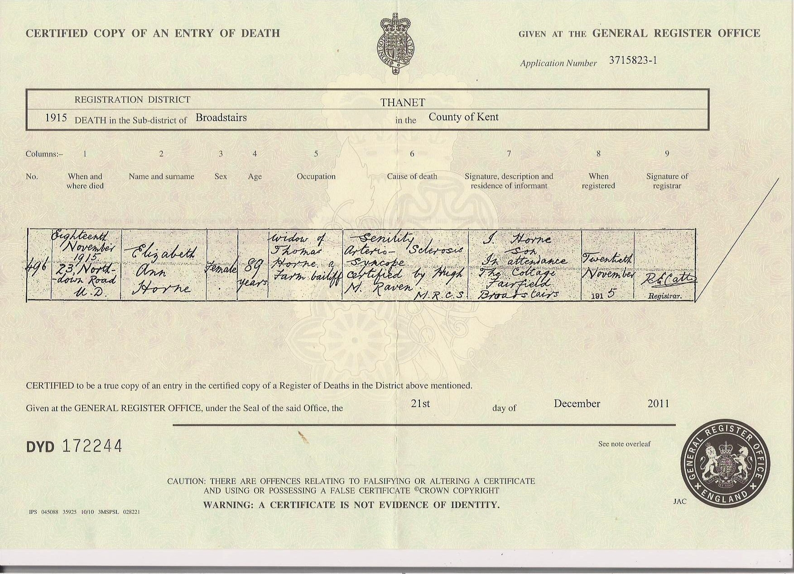
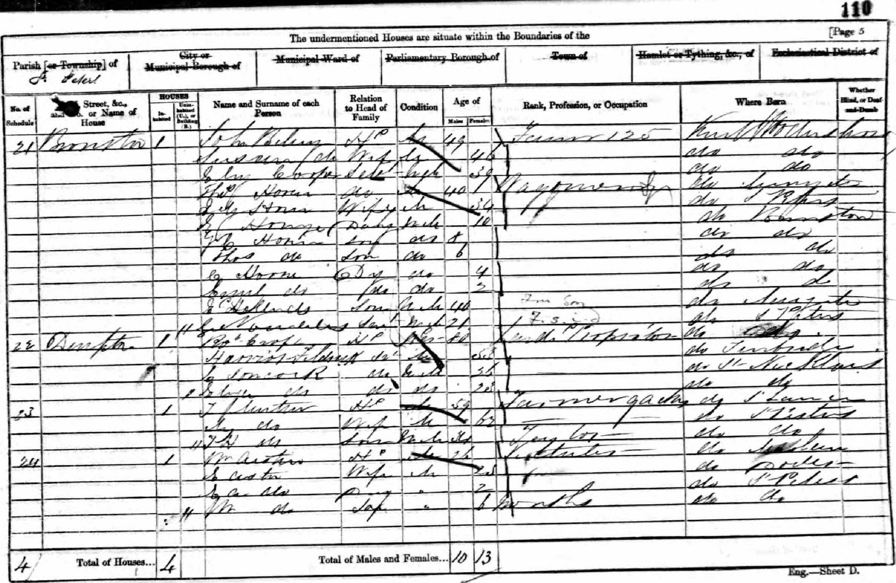
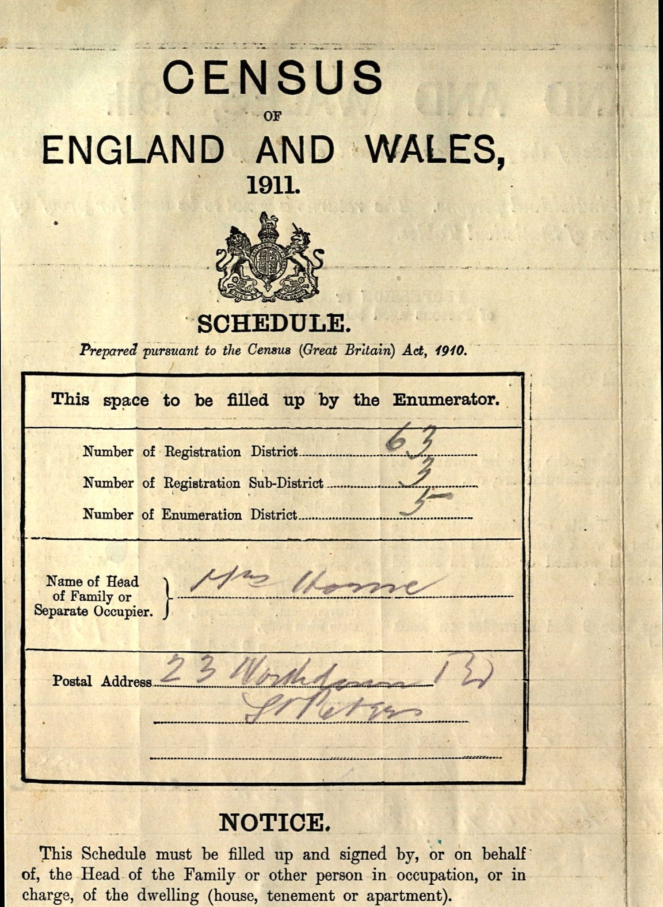
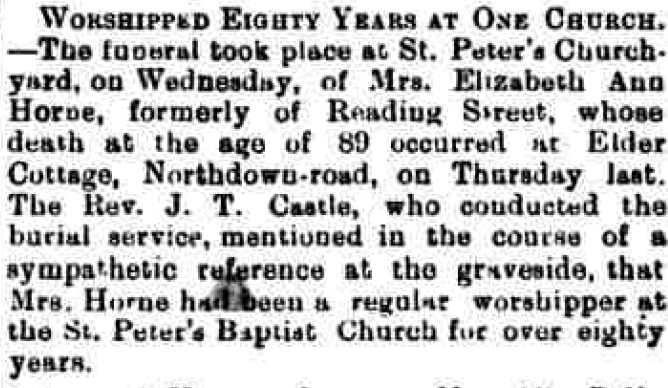
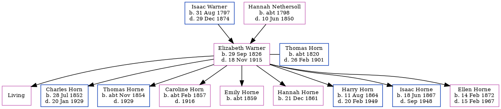

Elizabeth Ann Horn (née Warner) 1826 - 1915
[ Home ] | [ Calendar ] | [ Surnames Index ] | [ Census Index ] | [ Family History ]A general shopkeeper and the child of Isaac Warner (a laborer) and Hannah Nethersoll, Elizabeth Warner, the great-great-grandmother of Nigel Horne, was born in St Peters, Thanet, Kent, England on Sep 29, 18261,2,3,4,5,6, was baptized there on Oct 29, 1826 and married Thomas Horn (a farm bailiff with whom she had 9 children: Elizabeth Alice, Charles, Thomas Warner, Caroline, Emily, Hannah, Harry, Isaac and Ellen Mary Ann, along with 1 surviving child) in Margate, Kent, England on Oct 13, 18497.
During her life, she was living at her birthplace on Jun 6, 1841; at Bromstone, St Peters, Thanet, Kent on Mar 30, 185111 and on Apr 7, 1861; at Northdown in Margate on Apr 2, 18718; at Buddles Farm, Dane Court Road, St Peters, Thanet, Kent on Apr 3, 188112; at 194 Reading Street, St Peters, Thanet, Kent on Apr 5, 18919; at 1 Welbeck Terrace, Reading Street, St Peters, Thanet, Kent on Mar 31, 19015 following the death of her husband on Feb 26, 1901; and at Elder Cottage, 23 Northdown Road, St Peters, Thanet, Kent on Apr 2, 191110.
She died on Nov 18, 1915 at 23 Northdown Road, St Peters, Thanet, Kent6 (senility, arterio-sclerosis, syncope) and was buried at St Peters Churchyard, St Peters on Nov 24, 1915.
Parents
- Isaac was born on Aug 31, 1797
- Hannah was born c. 1798
Children
- Charles was born on Jul 28, 1852
- Thomas Warner was born c. Nov 1854
- Caroline was born c. Feb 1857
- Emily was born c. 1859
- Hannah was born on Dec 21, 1861
- Harry was born on Aug 11, 1864
- Isaac was born on Jun 18, 1867
- Ellen Mary Ann was born on Feb 14, 1872
Citations
- 1851 England Census Online publication - Provo, UT, USA: The Generations Network, Inc., 2005.Original data - Census Returns of England and Wales, 1851. Kew, Surrey, England: The National Archives of the UK (TNA): Public Record Office (PRO), 1851. Data imaged from the National
- 1871 England Census Online publication - Provo, UT, USA: The Generations Network, Inc., 2004.Original data - Census Returns of England and Wales, 1871. Kew, Surrey, England: The National Archives of the UK (TNA): Public Record Office (PRO), 1871. Data imaged from the National
- 1881 England Census Online publication - Provo, UT, USA: The Generations Network, Inc., 2004. 1881 British Isles Census Index provided by The Church of Jesus Christ of Latter-day Saints © Copyright 1999 Intellectual Reserve, Inc. All rights reserved. All use is subject to the
- 1891 England Census Online publication - Provo, UT, USA: The Generations Network, Inc., 2005.Original data - Census Returns of England and Wales, 1891. Kew, Surrey, England: The National Archives of the UK (TNA): Public Record Office (PRO), 1891. Data imaged from The National
- 1901 England Census Online publication - Provo, UT, USA: The Generations Network, Inc., 2005.Original data - Census Returns of England and Wales, 1901. Kew, Surrey, England: The National Archives of the UK (TNA): Public Record Office (PRO), 1901. Data imaged from the National
- England & Wales, FreeBMD Death Index: 1837-1915 Online publication - Provo, UT, USA: The Generations Network, Inc., 2006.Original data - General Register Office. England and Wales Civil Registration Indexes. London, England: General Register Office. © Crown copyright. Published by permission of the Cont
- England & Wales, FreeBMD Marriage Index: 1837-1915 Online publication - Provo, UT, USA: The Generations Network, Inc., 2006.Original data - General Register Office. England and Wales Civil Registration Indexes. London, England: General Register Office. © Crown copyright. Published by permission of the Cont
- 1871 England, Wales & Scotland Census - Findmypast (was age 44 and the wife of the head of the household)
- 1891 England, Wales & Scotland Census - Findmypast (was age 64 and the wife of the head of the household)
- 1911 Census for England & Wales - Findmypast (was age 84 and the head of the household)
- 1851 England, Wales & Scotland Census - Findmypast (was age 24 and the wife of the head of the household)
- 1881 England, Wales & Scotland Census - Findmypast (was age 54 and the wife of the head of the household)
Media
Thomas Horn - Elizabeth Ann Warner - Marriage Cert

Elizabeth Ann Warner - death certificate

Elizabeth Ann Warner - death certificate
1841 UK Census

1851 UK Census

UK 1861 Census

1871 UK Census

1911 UK census cover page

1901 UK Census

1911 UK census cover page
1911 UK Census

Thanet Advertiser 27 Nov 1915

South Eastern Gazette 23-10-1849

1911 England, Wales & Scotland Census Transcription - GBC-1911-RG14-04507-0405-2
England & Wales marriages 1837-2008 - BMD/M/1849/4/MZ/000911/039
Kent, Canterbury Archdeaconry marriages 1538-1928 - GBPRS/CANT/M/97030898/2
Kent, Canterbury Archdeaconry marriages 1538-1928 - GBPRS/CANT/M/97023354/2
1851 England, Wales & Scotland Census - GBC/1851/0005887465
1841 England, Wales & Scotland Census Transcription - GBC-1841-0013962674
England Births & Baptisms 1538-1975 - R_884661592
Family Tree
Generated by ged2site. Last updated on Jun 11, 2024